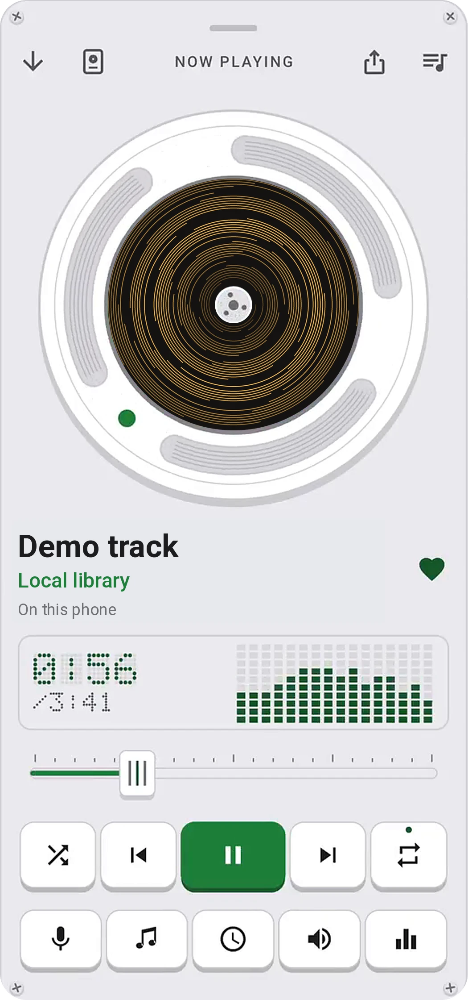
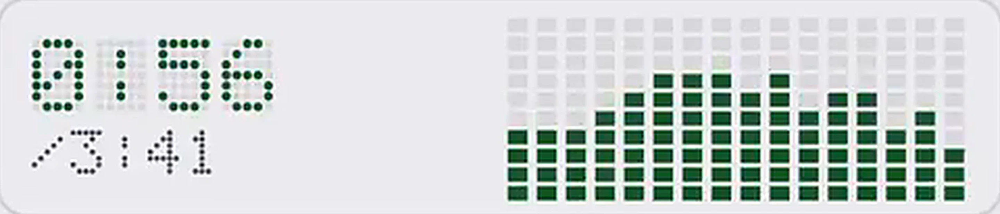
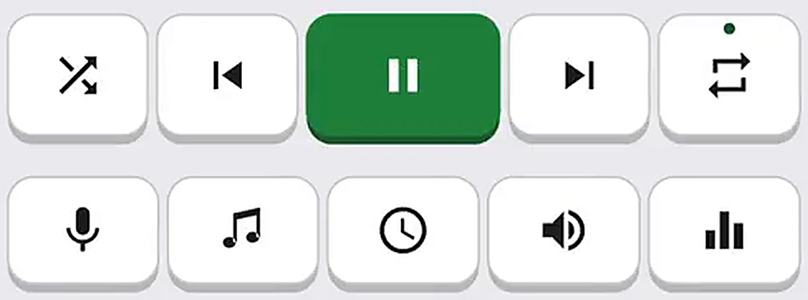
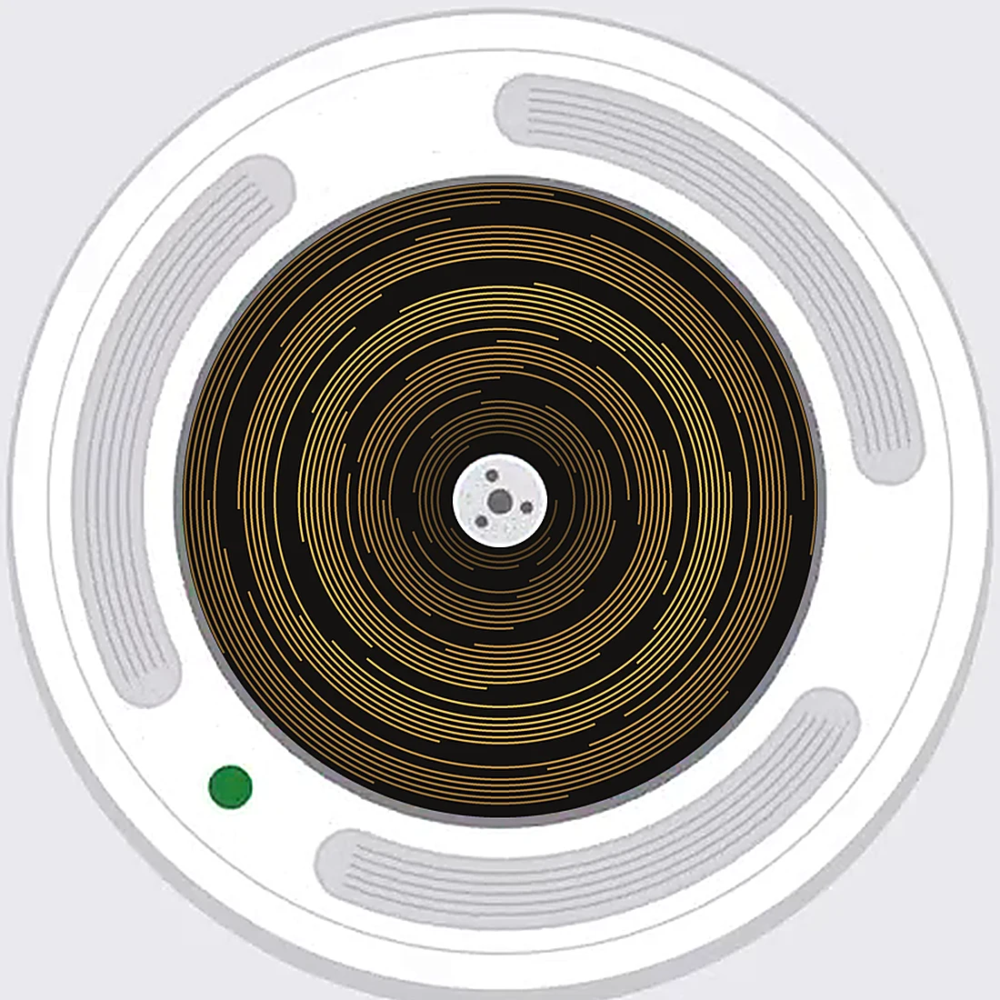
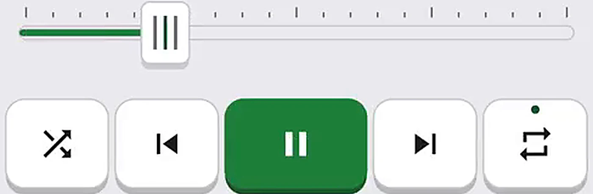

A reel you can turn
Drag around the reel to move through a song. The cover sits at its centre, and a tap on it lets you change the artwork. Deck is an optional skin that you switch on in Settings.

About 23 mskaraoke latency added
No internetpermission requested
8 themesin light and dark
Android 7.0and later
Drag around the reel to move through a song. The cover sits at its centre, and a tap on it lets you change the artwork. Deck is an optional skin that you switch on in Settings.
The time is set in dot matrix, and the bars are computed from the audio as it plays, after karaoke processing. The fader below seeks.
Large transport keys press down when you touch them. The row below holds karaoke on the microphone key, then Vibe Mode, sleep timer, volume and equalizer.


added when a small neural network strips the vocals while the song plays. It renders no files.2

is the whole karaoke model. It ships inside the app, so there is nothing to download later.

colour themes, from Swara gold to Ocean. The Deck follows the one you pick.
| Plays | Music already on your phone. No account. |
|---|---|
| Network | Requests no internet permission1 |
| Karaoke | Vocal removal on the phone, about 23 ms added latency2 |
| Karaoke model | Two-layer GRU, 4.2 MB file3 |
| Voice | Tap Hey Swara to play, pause or skip. Speech is transcribed on the phone.4 |
| Listening | Vibe Mode, mixes and Wrapped recaps, computed on the phone |
| Themes | 8 colour themes, each with light and dark5 |
| Requires | Android 7.0 (API 24) or later6 |
| Version | 2.1 |
| Built with | Java, Media3, Room, ONNX Runtime |
| Tests | 734 unit test methods in the repository7 |
| Licence | Apache 2.0 for the app. Karaoke model weights are non-commercial.3 |
“I skipped Kotlin and Compose because I wanted to learn what the Android framework does underneath.”
Prabhu Siddarth A V, who built Swara, on prabhusiddarth.dev